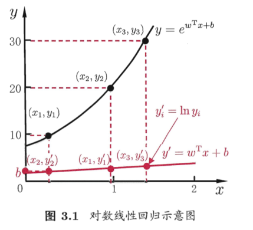

3.1 基本形式
给定由 d 个属性描述的示例 \(\vec{x} \)=\( (x_1;x_2;…;x_d) \), 其中 \(x_i \)是 \(\vec{x} \)在第 i 个属性上的取值
线性模型(linear model)试图学得一个通过属性的线性组合来预测的函数：
$$f({\vec{x} })=w_1x_1+w_2x_2+…w_dx_d+b$$
向量形式：
$$f({\vec{x}})={\ {\vec{w}}^{T}\ }{\vec{x}}+b$$
非线性模型可以在线性模型的基础上通过引入层级结构或高维映射而得
3.2 线性回归
基于均方误差最小化进行求解的方法称为最小二乘法
我们试图学得
$$f({\vec{x_i}})={\ {\vec{w}}^{T}\ }{\vec{x_i}}+b, 使得 \ f({\vec{x_i}\ }) \simeq y_i$$
这被称为multivariate linear regression
当 \({X}^{T}{X}\) 为满秩矩阵(full-rank matrix)或正定矩阵(positive definite matrix)时可解出:
$${\vec{w}}^{*} = ({X}^{T}{X})^{-1}{X}^{T}\vec{y}$$
然而现实任务中\({X}^{T}{X}\)往往不满秩，此时可解出多个 \({\vec{w}}^{*} \) 均可使均方误差最小化，选择哪一个往往由学习算法的归纳偏好决定，常见的做法是引入正则化(regularization)项
也可引出对数线性回归等广义线性模型，一般地，考虑单调可微函数 g, 令：
$$y = g^{-1}({\ {\vec{w}}^{T}\ }{\vec{x}}+b)$$

3.3 对数几率回归
对数几率函数(sigmoid)：
$$y=\frac{1}{1+e^{-z}}$$
它将z值转化为接近0或1的数，并且其输出值在z=0附近变化很陡
$$y=\frac{1}{1+e^{-({\ {\vec{w}}^{T}}{\vec{x}}+b)}\ } \implies ln\frac{y}{1-y}={\ {\vec{w}}^{T}}{\vec{x}\ }+b$$
若将y视为样本 \(\vec{x} \) 作为正例的可能性，则1-y是其反例可能性，两者的比值 \(\frac{y}{1-y} \) 称为几率(odds),反应了\(\vec{x} \)作为正例的相对可能性，对几率取对数则称为对数几率(log odds)
对数几率回归就是用线性回归模型的预测结果去逼近真实标记的对数几率，虽然名为回归但其实是一种分类学习方法
通过极大似然法来估计 \( \vec{w} \) 和 b
3.27是关于 \(\beta \)的高阶可导连续凸函数，可通过梯度下降法，牛顿法求解
$$\beta^{*} = argmin_{\beta} \ \mathcal{l}(\beta)$$
以牛顿法为例，第t+1轮迭代解的更新公式为:
关于 \( \beta \)的一阶，二阶导数为(注意二阶导是一个矩阵)：
3.4 线性判别分析
线性判别分析(Linear Disciminant Analysis, 简称LDA)
LDA思想：给定训练集，设法将样例投影到一条直线上，使得同类样例的投影点尽可能相近，异类样例的投影点尽可能远离；在对新样本进行分类时，将其投影到这条直线上然后根据投影点的位置来确定新样本的类别。
给定数据集 \(D= \{ {(\vec{x_i},y_i)}_{i=1}^{m} \},y_i \in \{0,1\} \),\({\bf{X_i}},\vec{\mu_i}, {\bf{\sum_i}} \)分别表示第 \(i \in \{0,1\} \)的集合，均值向量，协方差矩阵。若将数据投影到直线\(\vec{w} \) 上，则两类样本的重心在直线上的投影分别为 \(\vec{w}^{T}\mu_0 ,\vec{w}^{T}\mu_1\)，协方差分别为\(\vec{w}^{T}\sum_0 \vec{w} ,\vec{w}^{T}\sum_1 \vec{w}\)
$$S_b\vec{w}=\lambda S_w\vec{w}=\lambda(\vec{\mu_0}-\vec{\mu_1}) \implies \vec{w}={S_w}^{-1}(\vec{\mu_0}-\vec{\mu_1})$$
考虑到数值解的稳定性，实践中通常对 \(S_w \)进行奇异值分解，\(S_w = U\sum V^{T} \),\(\sum \)是实对角阵，对角线上的元素是 \(S_w \) 的奇异值，然后 \(S_w^{-1}=V{\sum}^{-1}U^{T} \)
也可以将LDA推广到多分类任务中
3.5 多分类学习
可以基于一些基本策略，利用二分类器来解决多分类问题
经典的拆分策略:OvO,OvR,MvM
MvM每次将若干类作为正类，若干其他类作为反类，显然OvO和OvR都是其特例，正反类的构造需要有特殊设计:纠错输出码(Error Correcting Output Codes简称ECOC)
- 编码：对N个类做M次划分，每次划分将一部分划为正类，另一部分划为反类，从而形成一个二分类训练集；这样产生了M个训练集，可以训练出M个分类器
- 解码：M个分类器分别对测试样本预测，形成一个编码，将其与各个类别的编码比较，返回其中距离最小的类别作为预测结果
编码矩阵常见的有二元码和三元码，其中三元码额外指定了一个停用类
ECOC对分类器的错误有一定的容忍和修正能力，ECOC编码越长，纠错能力越强，但也意味着所需训练的分类器越多
3.6 类别不平衡问题
类别不平衡(class-imbalance)是指分类任务中不同类别的训练样例数目相差很大的情况
当训练集中正，反例数目不同时，令\(m^+ \)表示正例数目，\(m^- \) 表示反例数目，则观测几率是\(\frac{m^+}{m^-} \),由于我们通常假设训练集是真实样本总体的无偏采样，因此观测几率就代表了真实几率：
$$若 \frac{y}{1-y}>\frac{m^+}{m^-}则预测为正例$$
然而训练集是真实样本的无偏采样这个假设往往不成立，现有技术:
- 欠采样(undersampling)：EasyEnsemble算法，利用集成学习将反例划分为若干个集合供不同学习器使用
- 过采样(oversampling): SMOTE算法，对训练集里的正例进行插值来产生额外的正例
- 阈值移动(threshold-moving)